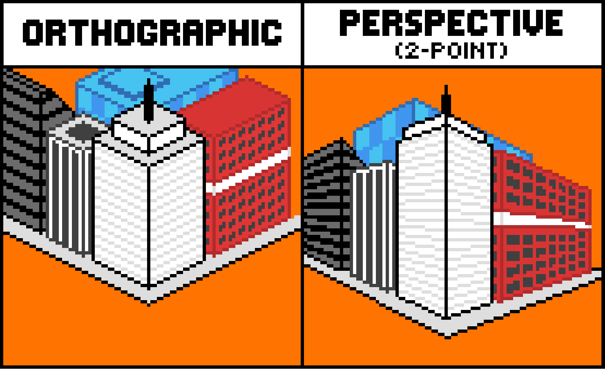

Introduction:
Bonjour et bienvenue sur cet article un petit peu spécial. Je pense que si vous êtes ici c'est que vous avez déjà entendu parler de ThreeJS et c'est tout à fait normal. Il monte de plus en plus en popularité depuis ces deux dernières années et se professionnalise de plus en plus en suivant sa courbe de popularité. C'est pour cela que je vous incite fortement à lire la documentation de ThreeJS car elle convient parfaitement
Dans cet article, on va simplement essayer de voir les subtilités que ThreeJS ne nous montre pas dès le début. Essayer de comprendre comment les choses fonctionnent, pour que quand vous avez un problème ou un bug sur votre application, vous sachiez d'où le problème provient.
1. La scene
const scene = new THREE.Scene();
Commençons par la scène, un des 3 éléments essentiels pour utiliser ThreeJS.
Une manière de voir les choses est que la scène est le monde dans lequel évoluent les choses, dans lequel vous allez faire évoluer et créer les éléments.
Garder une chose bien en tête, votre utilisation de ThreeJS n'est pas bloquée à une seule scène. Vous pouvez complètement créer plusieurs scènes afin de réaliser différents rendus.
Voici un exemple de Bruno Simon qui utilise plusieurs scènes pour réaliser un rendu de passage dans l'herbe. Je vous l'expliquerai plus en détail dans la section du rendre. Mais retenez que vous pouvez faire jouer plusieurs scènes en parallèle, en afficher plusieurs en même temps ou bien n'en utiliser qu'une. La seule limite est votre capacité d'optimisation.
2. La camera
const camera = new THREE.PerspectiveCamera( 75, window.innerWidth / window.innerHeight, 0.1, 1000 );
Ici nous créons une caméra, la caméra est un petit peu les yeux qui permettent de voir le monde. Il en existe plusieurs mais seuls deux sont principalement utilisés.
La PerspectiveCamera ( ici utilisée), elle imite une vision binoculaire, c’est-à-dire voir la perspective et la profondeur des éléments.
A contrario, il y a l'OrthographiqueCamera, qui elle simule une fausse 3D. Pour être plus imager, avant de passer la 2D à la 3D, les développeurs de jeux vidéo ont inventé la vue Orthographique qui simule une fausse 3D pour concurrencer les 2D simples. Elle est surtout utilisée pour les jeux de gestion comme SimCity.
3. Le renderer
const renderer = new THREE.WebGLRenderer();
Pour finir, nous devons créer le rendu. Comme son nom l'indique, c'est lui qui va être en charge de créer un rendu de la scène. Pour revenir sur les métaphores visuelles, le rendre serait le cerveau. Il se charge de récupérer les informations de lumière reçues par les yeux et crée une image. Le rendre fonctionne exactement de la même manière.
renderer.render( scene, camera );
Pour revenir sur l'explication de l'utilisation des deux scènes de Bruno Simon, vous pouvez voir deux scènes, une avec la voiture, le sol, l'herbe, et une juste avec la voiture. Sur la deuxième, la caméra dessine où la voiture est passée, et la première scène, celle avec l'herbe récupérer le résultat, et retire l'herbe présente sur les traces blanches.
Avec de l'imagination et de la connaissance d'optimisation, il est possible de tout réaliser.